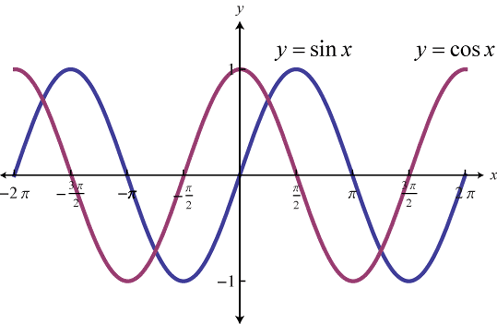
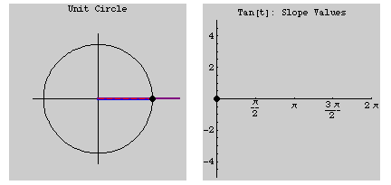

MAT100 for ELK og KOM
Uke 3
05.09.2016
Alexander Lundervold
institutt for data- og realfag
Sist uke

{kind=link}
{kind=link}
Denne uken
- P.6: Polynomer og rasjonale funksjoner
- P.7: Trigonometriske funksjoner
- Kap. 1: Grenseverdier til funksjoner
Trigonometriske funksjoner
Husk motivasjonen:
Kan bruke sinus og kosinus til å splitte opp signaler
Ikke bare av teoretisk interesse! Husk f.eks.MRI. Kun en av et enormt antall anvendelser.
{kind=link}
Viktigste funksjonen i elektro:
$$s(t) = A\sin\big(\omega t + \varphi\big)$$Trigonometriske funksjoner
Hva er radianer? Hva er sinus og cosinus?


Hva er $\pi$? $\pi$-animasjon
{kind=link}
Graf til sinus:

Cosinus er forskjøvet versjon av sinus:
{kind=link}
Graf til sinus og cosinus fra enhetssirkel:
 Eventuelt:
Eventuelt:

Graf til tangens. Husk $\tan t = \sin t / \cos t$.
{kind=link}
Funksjoner og grenser
Grenseverdier
Regneregler:
$$ \begin{align*} &\lim_{x\rightarrow a} \big(f(x) \pm g(x)\big) = L \pm M\\ &\lim_{x\rightarrow a} \big(f(x) \cdot g(x)\big) = L \cdot M\\ &\lim_{x\rightarrow a} \big(k \cdot f(x)\big) = k \cdot L, \quad \text{der k er et tall}\\ &\lim_{x\rightarrow a} \bigg(\frac{f(x)}{g(x)}\bigg) = \frac{L}{M}, \quad \text{så lenge } M \neq 0 \end{align*} $$
Skviseteoremet

Se også her: Squeeze Theorem (Wolfram)
Skviseteoremet

\[\lim_{x\rightarrow 0} \frac{\sin x}{x} = 1\]
Skviseteoremet

\[\lim_{x\rightarrow \infty} \frac{\sin x}{x} = 0\]